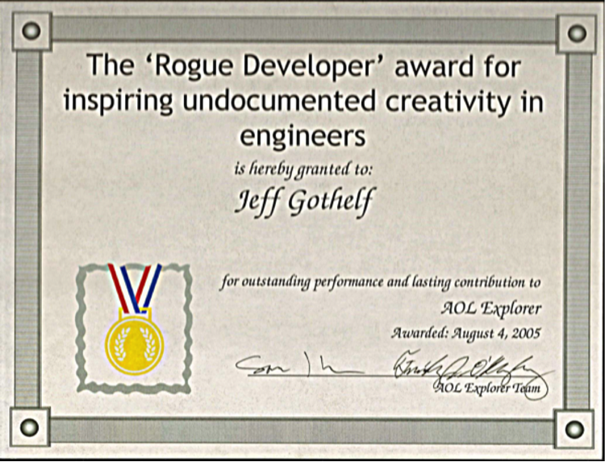

In baseball, you don’t know nothing.
—Yogi Berra
In Part I of this book, we discussed the principles behind Lean UX. We hope you understand from that section that Lean UX is a mindset. In Part II, we discussed some of the key methods of Lean UX, because Lean UX is also a process. As we’ve worked with clients and taught these methods to teams, it’s become clear that Lean UX is also a management method. For this reason, you’ll need to make some changes in your organization to get the most benefit from working this way.
Organizational shifts aren’t easy, but they’re not optional. The world has changed: our organizations must change with it. Any business of scale (or any business that seeks to scale) is, like it or not, in the software business. Regardless of the industry in which your company operates, software has become central to delivering your product or service.
This is both empowering and threatening. The ability to reach global markets, scale operations to meet increased demand, and create a continuous conversation with your customers has never been easier. This power is also a double-edged sword: it offers these same opportunities to smaller competitors who would never have been able to compete before the broad adoption of software. This makes the need to adopt Lean UX all the more urgent.
Lean UX makes it possible for you to use the power of software to create a continuous improvement loop that allows your company to stay ahead of its competitors. It’s this loop that drives organizational agility and allows your company to react to changes in the market at speeds never possible, even just five years ago.
When we train teams, they sometimes ask, “How can we put these methods into practice here?” And on this point, we’re always a little hesitant. Although we’re confident that most organizations can solve these problems, we’re also aware that every organization is different. Finding the right solution requires a lot of close work and collaboration with your colleagues and your executives.
To prepare you for that work, we’re going to use this chapter to share some of the shifts that organizations need to make in order to embrace Lean UX. We’re not going to tell you how to make those shifts; that’s your job. But we hope this discussion will help you survey the landscape to find the areas you’re going to want to address.
In this chapter, we discuss the shifts your organization might need to make in these areas.
As you implement Lean UX, consider these dimensions of culture:
Adopting a position of humility
Embracing new skills
Creating open, collaborative workspaces
No more heroes
Falling in love with the problem, not the solution
Shifting agency culture
Being realistic about your environment
Finally, your product development processes will change as well:
Shifting from output to outcomes
Eliminating Big Design up front
Speed first, aesthetics second
Embracing UX debt
Navigating documentation standards
Managing up and out
Imagine for a moment that you work on an assembly line that makes cars. The end state of your product is well-defined in advance. The cost of producing that product is clear. The process to create it has been optimized and the ways customers will use that car—based on more than 100 years of observation—is also clear. In situations like this, the focus is on quality, efficiency, and cost control.
We’re not building cars.
Our medium is software, and our products and services are complex and unpredictable. They don’t have an end state. We can continue to design, build, operate, and optimize our digital products as long as it makes economic sense to do so. Most perplexing is that our customers might use our digital services in ways we never imagined. In many cases, the best features of a system emerge over time as people use the system. (Twitter’s hashtag is a great example of this: users invented this feature, and then Twitter added support for it after the fact.) With so many unknowns, there is only so much confidence we can have in the scope, roadmap, implementation, and success of our product. The good news is that through the rise of the Agile and DevOps movements, we can move away from the assembly-line methods of past generations and adopt continuous production methods. When we pair that capability with Lean UX, we get the ability to learn very quickly how valid or invalid our ideas are.
To fully take advantage of these new capabilities, your organization must adopt a position of humility. Your organization must accept that, in the face of all this complexity and uncertainty, we just can’t predict the exact shape our service will have to take to be successful. This is not an abdication of vision. Instead, it requires a strong opinion about the shape the system should take, coupled with the willingness to change course if evidence from the market reveals that initial vision was wrong. Adopting this mindset makes it safe for teams to experiment, fail, and learn. It is only through this trial-and-error process that Lean UX can thrive. If there’s no room for course correction, the continuous learning that Lean UX promotes will be seen, at best, as a distraction, and, at worst, a waste of time.
Chapter 3 discusses the role of outcomes in Lean UX. Lean UX teams measure their success not in terms of completed features, but in terms of progress toward specific outcomes. Determining outcomes is a leadership activity; it’s one that many organizations are not good at or don’t do at all. Too often, leadership directs the product team through a feature-centric Product Roadmap—a set of outputs and features that they require the product team to produce by a specific date.
Teams using Lean UX must be empowered to decide for themselves which features will create the outcomes their organizations require. To do this, teams must shift their conversation with leadership from one based on features to one centered on outcomes. This conversational shift is a radical one. Product managers must determine which business metrics require the most attention. What effect are they trying to create? Are they trying to influence customer behavior? If so, how? Are they trying to increase performance? If so, by what measure? These metrics must be linked to a larger business impact.
Leadership must set this direction. If not, teams must demand this shift of them. Teams must ask, “why are we working on this project?” And, “how will we know we’ve done a good job?” Managers need to be retrained to give their teams the answers to these questions. They must be given the freedom to work with their teams to determine which features best achieve these goals. Teams must move from feature roadmaps to backlogs of hypotheses to test. Work should be prioritized based on risk, feasibility, and potential success.
In most companies, the work you do is determined by your job title. That job title comes with a job description. Too often, people in organizations discourage others from working outside the confines of their job descriptions (e.g., “You’re not a developer, what can you possibly know about JavaScript?”) This approach is deeply anticollaborative and leaves people’s full set of skills, talents, and competencies unused.
Discouraging cross-functional input encourages organizational silos. The more discrete a person’s job is, the easier it becomes to retreat to the safe confines of that discipline. As a result, conversation across disciplines wanes, and mistrust, finger-pointing, and CYA (“Cover Your Ass”) behavior grows.
Silos are the death of collaborative teams.
For Lean UX to succeed, your organization needs to adopt a mantra of “competencies over roles.” Every team member possesses a core competency—design, software development, research, and so on—and must deliver on that skill set. However, members might also possess secondary competencies that make the team work more efficiently.
Allow your colleagues to contribute in any disciplines in which they have expertise and interest. You’ll find it creates a more engaged team that can complete tasks more efficiently. You’ll also find it builds camaraderie across job titles as people with different disciplines show interest in what their colleagues are doing. Teams that enjoy working together produce better work.
Many companies only ask designers to create wireframes, specifications, and site maps. They limit their participation in a project to the design phase of whatever process the company happens to be using. Plugging designers into these existing workflows limits their effectiveness by limiting the scope of their work, which has a side-effect of reinforcing a siloed team model.
The success of a collaborative team demands more. Although teams still need core UX skills, designers must add facilitation as one of their core competencies. This requires two significant shifts to the way we’ve worked to date:
For many teams, collaboration is a single-discipline activity. Developers solve problems with other developers while designers go sit on bean bags, fire up the lava lamps, and “ideate” with their black-turtlenecked brethren. (We kid.) (Well... only a little. We love designers.)
The ideas born of single-discipline collaborations are single-faceted. They don’t reflect the broader perspective of the team, which can illuminate a wider range of needs, be they the needs of the customer, the business, or the technology. Worse, working this way requires discipline-based teams to explain their work. Too often, the result is a heavy reliance on detailed documentation and a slowdown in the broader team’s learning pace.
Lean UX requires cross-functional collaboration. By creating interaction between product managers, developers, QA engineers, designers, and marketers, you put everyone on the same page. Equally important: you put everyone on the same level. No single discipline dictates to the other. All are working toward a common goal. Allow your designers to attend “developer meetings,” and vice versa. In fact, just have team meetings.
We’ve known how important cross-functional collaboration is for a long time. Robert Dailey’s study from the late ’70s called “The Role of Team and Task Characteristics in R&D Team Collaborative Problem Solving and Productivity,” found a link between a team’s problem-solving productivity and what he called “four predictors,” which included “task certainty, task interdependence, team size, and team cohesiveness.”1
Keep your team cohesive by breaking down the discipline-based boundaries.
Larger groups of people are less efficient than smaller ones. This makes intuitive sense. But less obvious is this: a smaller team must work on smaller problems. This small size makes it easier to maintain the discipline needed to produce Minimum Viable Products (MVPs). Break your big teams into what Amazon.com founder Jeff Bezos famously called “two-pizza teams.” If the team needs more than two pizzas to make a meal, it’s too big.
If the task is large, break it down into components that several small teams can handle simultaneously. Align those teams with a single outcome to achieve. This way, all of them are working toward the same goal. This forces these small teams to self-organize and communicate efficiently while reducing the risk of each team optimizing locally.
Break down the physical barriers that prevent collaboration. Colocate your teams and create workspaces for them that keep everyone visible and accessible. Make space for your team to put their work up on walls and other work surfaces. Nothing is more effective than walking over to a colleague, showing some work, discussing, sketching, exchanging ideas, understanding facial expressions and body language, and reaching a resolution on a thorny topic.
When you colocate people, create cross-functional groupings. That means removing them from the comforts of their discipline’s “hideout.” It’s amazing how even one cubicle wall can hinder conversation between colleagues.
Open workspaces make it possible for team members to see each other and to easily reach out when questions arise. Some teams have gone as far as putting their desks on wheels so that they can relocate closer to the team members they’re collaborating with on that particular day. Augment these open spaces with breakout rooms where the teams can brainstorm. Wall-sized whiteboards or simply painting the walls with whiteboard paint provides many square feet of discussion space. In short, remove the physical obstacles between your team members. Your space planners might not like it at first, but your stakeholders will thank you.
In many situations collocation is not an option. When dealing with distributed teams, give them the tools they need to communicate and collaborate. These include things like video conferencing software (e.g., Skype and Google Hangouts), real-time communication services (e.g., Slack and Hipchat), simple file-sharing software (e.g., Dropbox), remote-pairing software (Screenhero), and anything else that might make their collaboration easier and more productive. Don’t forget that occasionally plane tickets to meet each other in the flesh go a long way toward maintaining long-distance collaboration. Perhaps the most important thing to remember if you’re trying to implement Lean UX with distributed teams is this: the members of these teams must be awake at the same time. The overlap doesn’t need to cover an entire work day but there must be some block of time every day during which colleagues can have conversations and participate in collaborative exercises.
As we’ve continued to work with a wider variety of teams there are still many designers who resist Lean UX. One reason? Many designers want to be heroes.
In an environment in which designers create beautiful deliverables, they can maintain a heroic aura. Requirements go in one end of the design machine and gorgeous artwork makes its way out. People “ooh” and “aah” when the design is unveiled. Designers have thrived on these reactions (both informal and formalized as awards) for many years.
We’re not suggesting that all of these designs are superficial. Schooling, formal training, experience, and a healthy dose of inspiration go into every Photoshop document that designers create—and often the results are smart, well considered, and valuable. However, those glossy deliverables can drive bad corporate decisions—they can bias judgment specifically because their beauty is so persuasive. Awards are based on the aesthetics of the designs (rather than the outcome of the work), hiring decisions are made on the sharpness of wireframes, and compensation depends on the brand names attached to each of the portfolio pieces.
The result of this is that the creators of these documents are heralded as thought leaders and elevated to the top of the experience design field. They are recognized as the “go-to” people when the problem has to get solved quickly. But can a single design hero be responsible for the success of the user experience, the business, and the team? Should one person be heralded as the sole reason for an initiative’s success?
In short, no.
For Lean UX to succeed in your organization, all types of contributors—designers and nondesigners—need to collaborate broadly. This can be a hard shift for some, especially for visual designers with a background in interactive agencies. In those contexts, the creative director is untouchable. In Lean UX, the only thing that’s untouchable is customer insight.
Lean UX literally has no time for heroes. The entire concept of design as hypothesis immediately dethrones notions of heroism; as a designer you must expect that many of your ideas will fail in testing. Heroes don’t admit failure. But Lean UX designers embrace it as part of the process.
In the Agile community, you sometimes hear people talk about Big Design Up Front, or BDUF. We’ve been advocating moving away from BDUF for years. But it wasn’t always that way.
In the early 2000s, Jeff was a user interface designer at AOL, working on a new browser. The team was working on coming up with ways to innovate on existing browser feature sets. But they always had to wait to implement anything until Jeff created the appropriate mockups, specifications, and flow diagrams that described these new ideas.
One developer got tired of waiting and started implementing some of these ideas before the documents were complete. Jeff was furious! How could he have gone ahead without design direction? How could he possibly know what to build? What if it was wrong or didn’t work? He’d have to rewrite all the code!
Turns out the work he did allowed the team to see some of these ideas much sooner than before. It gave team members a glimpse into the actual product experience and allowed them to quickly iterate their designs to be more usable and feasible. From that moment on they relaxed the BDUF requirements, especially as the team pushed into features that required animations and new UI patterns.
The irony of the team’s document-dependency and the “inspiration” it triggered in that one developer was not lost. In fact, at the end of the project, Jeff was given a mock award (Figure 8-1) for inspiring “undocumented creativity” in a teammate.

Even though most teams these days actively shun the concept of Big Design Up Front, we’ve seen a resurgence in this practice in supposedly Agile environments. This new, sneaky version of BDUF is called Agile-fall. Agile-fall is the combination of an up-front design phase that results in work that is handed off, waterfall style, to an engineering team to then break up into stories and develop in an “agile” way. The argument for this way of working centers on the engineering team’s desire to stay the course during implementation and to be able to predict when the work will ship with some degree of confidence. This is done in the name of predictability and efficiency.
The problem, of course, is that Agile-fall removes the collaboration between design and engineering that Lean UX requires to succeed. It ends up forcing teams to create big documentation to communicate design, followed by even lengthier negotiations between designers and developers. Sound familiar? It’s BDUF in a new disguise. The waste created with Agile-fall is a symptom of a broader management issue that continues to push teams toward fixed scope and fixed deadlines. Engineers rightly feel the only way they can make scope and deadline commitments is if they have a crystal clear understanding of what needs to be developed, along with a promise that nothing will change. (Never mind that agile is about embracing change!) Of course, as we know by now, software is complex and unpredictable and, even with a locked-down design, the ability to predict exactly what will ship and when it will ship is closer to fortune-telling than it is to project management.
If Agile-fall is the way your team works, consider amplifying the conversation about managing to outcomes with your stakeholders. By moving the conversation away from fixed time and scope, and steering toward customer behavior as a measure of success, the demands to do all the design work up front should begin to disappear.
Jason Fried, CEO of Basecamp once said, “Speed first, aesthetics second.”
He wasn’t talking about compromising quality. He was talking about editing his ideas and process down to the core. In Lean UX, working quickly means generating many artifacts. Don’t waste time debating which type of artifact to create, and don’t waste time polishing them to perfection. Instead ask yourself the following:
Who do I need to communicate with?
What do I need to get across to them immediately?
What’s the least amount of work I need to do to communicate that to them?
If you’re working with a developer who is sitting next to you, a whiteboard sketch might suffice. If an executive is asking detailed product questions, you might need to create a visual mockup. Customers might require prototypes. Whatever the scenario, create the artifact that will take the least amount of time. Remember, these artifacts are a transient part of the project—like a conversation. Get it done. Get it out there. Discuss. Move on.
Aesthetics—in the visual design sense—are an essential part of a finished product and experience. The fit and finish of these elements make a critical contribution to brand, emotional experience, and professionalism. At the visual design refinement stage of the process, putting the effort to obsess over this layer of presentation makes a lot of sense. However, putting in this level of polish and effort into the early-stage artifacts—wireframes, site maps, workflow diagrams—is (usually) a waste of time.
By sacrificing the perfection of intermediate design artifacts, your team will get to market faster, and learn more quickly which elements of the whole experience (design, workflow, copy, content, performance, value propositions, etc.) are working for the users and which aren’t. And, you’ll be more willing to change and rework your ideas if you’ve put less effort into presenting them.
Lean UX makes us ask hard questions about the nature of quality in our design work.
If you’re a designer reading this, you’ve probably asked yourself a question that often comes up when speed trumps aesthetic perfection:
If my job is now to put out concepts and ideas instead of finished work, everything I produce will feel half-assed. I feel like I’m “going for the bronze.” Nothing I produce will ever be finished. Nothing is indicative of the kind of products I am capable of designing. How can I feel pride and ownership for designs that are simply not done?
For some designers, Lean UX threatens what they value in their work and puts their portfolio at risk. It might even feel as though it threatens their future employability. These emotions are based on what many hiring managers have valued to date—sexy deliverables (i.e., solutions). Rough sketches, “version one” of a project, and other low-fidelity artifacts are not the making of a “killer portfolio.” With the realization that software solutions continue to evolve over time, all of that is now changing.
Although your organization must continue to value aesthetics, polish, and attention to detail, other dimensions of design are equally important. The ability to understand the context of a business problem, think fast, and build shared understanding needs to get a promotion. Designers can demonstrate their problem-solving skills by illustrating the paths they took to get from idea to validated learning to experience. In doing so, they’ll demonstrate their deep worth as designers. Organizations that seek out and reward problem-solvers will attract—and be attracted to—these designers.
It’s often the case that teams working in Agile processes do not actually go back to improve the user interface of the software. But as our friend Jeff Patton likes to say, “It’s not iteration if you do it only once.” Teams need to make a commitment to continuous improvement, and that means not simply refactoring code and addressing technical debt, it also means reworking and improving user interfaces. Teams need to embrace the concept of UX debt and make a commitment to continuous improvement of the user experience.
James O’Brien, an interaction designer working in London, describes what happened when his team began tracking UX debt in the same manner that the team used to track technical debt. “The effect was dramatic. Once we presented [rework] as debt all opposition fell away. Not only was there no question of the debt not being paid down, but it was consistently prioritized.”
To begin tracking UX debt, you can just create a category of stories in your backlog called UX debt. Sometimes, though, experience problems are not something that a single team can solve—solving bigger problems can require the coordinated effort of many teams. For these larger efforts—experience problems that span large user journeys—try this:
Work together with your team to create a second journey map that shows the ideal experience
Make these two artifacts clearly visible (on a wall) next to each other
Identify teams responsible for portions of that customer journey and invite them to the wall to review the gap between current and desired states
Work with these teams to write UX debt stories to go on their backlogs
Clearly identify on the journey maps when the current experience has been improved and who is working on other improvements
Applying Lean UX in an interactive agency is no small challenge. Most agencies have a business model that conflicts with Lean UX. The traditional agency business model is simple: clients pay for deliverables—designs, specs, code, PowerPoint decks—not outcomes. But agency culture is also a huge obstacle. The culture of hero design is strong in places that elevate individuals to positions like executive creative director. Cross-disciplinary collaboration can also be difficult in big agencies, where the need to keep utilization high has led to processes that encourage functional silos. These, in turn, lead to “project phases” that encourage deliverable-centric work.
Perhaps the most challenging obstacle is the client’s expectation to “throw it over the wall” to the agency, and then see the results when they’re ready. Collaboration between client and agency in this case can be limited to uninformed and unproductive critique that is based on personal bias, politics, and ass-covering.
To make Lean UX work in an agency, everyone involved in an engagement must focus on maximizing two factors: increasing collaboration between client and agency, and working to change the focus from outputs to outcomes.
Some agencies are attempting to focus on outcomes by experimenting with a move away from fixed-scope and deliverable-based contracts. Instead, their engagements are based on simple time-and-materials agreements or, more radically, toward outcome-based contracts. In either case, the team becomes freer to spend its time iterating toward a specified goal. Clients give up the illusion of control that a deliverables-based contract offers but gain a freedom to pursue meaningful and high-quality solutions that are defined in terms of outcomes, not feature lists.
To increase collaboration, agencies can try to break down the walls that separate them from their clients. Clients can be pulled into the process earlier and more frequently. Check-ins can be constructed around less formal milestones. And collaborative work sessions can be arranged so that both agency and client benefit from the additional insight, feedback, and collaboration with each other.
These are not easy transformations—neither for the agency nor the client who hires them—but it is the model under which the best products are built.
In agency relationships, software development teams (either at the agency, at the client, or a third-party team) are often treated as outsiders and often brought in at the end of a design phase. It’s imperative that you change this: development partners must participate through the life of the project—not simply by including them as passive observers. Instead, you should seek to have software development begin as early as possible. Again, you are looking to create a deep and meaningful collaboration with the entire project team—and to do that, you must actually be working side by side with the developers.
In Chapter 9 we highlight two agencies, ustwo and Hello Group, that have found different paths for addressing these challenges.
Third-party software development vendors pose a big challenge to Lean UX methods. If a portion of your work is outsourced to a third-party vendor—regardless of the location of the vendor—the Lean UX process is more likely to break down. This is because the contractual relationship with these vendors can make the flexibility that Lean UX requires difficult to achieve.
When working with third-party vendors, try to create projects based on time and materials. This will make it possible for you to create a flexible relationship with your development partner. You will need this in order to respond to the changes that are part of the Lean UX process. Remember, you are building software to learn, and that learning will cause your plans to change. Plan for that change and structure your vendor relationships around it.
When selecting partners, remember that many outsourced development shops are oriented toward production work and see rework as a problem rather than a learning opportunity. When seeking partners for Lean UX work, look for teams willing to embrace experimentation and iteration, and who clearly understand the difference between prototyping-to-learn and developing-for-production.
Depending on the domain you work in, your organization might impose strict documentation standards that meet both internal and regulatory compliance. These documents might not add any value for the project while it’s in flight, yet the team still has to create them. Many teams struggle to move their projects forward when faced with these regulations. They wait until the documents are complete before beginning the design and implementation of the work slowing, down progress and team learning. Then, when the documents are complete, any adjustment of the work described within them is discouraged because of the documentation overhead that change drives.
This situation is exactly where, as designer and coach Lane Halley put it, you “lead with conversation, and trail with documentation.” The basic philosophies and concepts of Lean UX can be executed within these environments—conversation, collaborative problem solving, sketching, experimentation, and so on—during the early parts of the project lifecycle. As hypotheses are proven and design directions solidify, transition from informal documentation practices back to the documentation standard your company requires. Use this documentation for the exact reason your company demands—to capture decision history and inform future teams working on this product. Don’t let it hold you up from making the right product decisions.
Change is scary. The Lean UX approach brings with it a lot of change. This can be especially disconcerting for managers who have been in their position for a while and are comfortable in their current role. Some managers can be threatened by proposals to work in a new way—which could end up having negative consequences for you. In these situations, try asking for forgiveness rather than permission. Try out some ideas and prove their value with quantifiable success. Whether you saved time and money on the project or put out a more successful update than ever before—these achievements can help make your case. If your manager still doesn’t see the value in working this way and you believe your organization is progressing down a path of continued “blind design,” perhaps it’s time to consider alternative employment.
Lean UX gives teams a lot of freedom to pursue effective solutions. It does this by stepping away from a feature roadmap approach, and instead empowers teams to discover the features they think will best serve the business. But abandoning the feature roadmap has a cost—it removes a key tool that the business uses to coordinate the activity of teams. So, with the freedom to pursue your agenda comes a responsibility to communicate that agenda.
You must constantly reach out to members of your organization who are not currently involved in your work to make them aware of what’s coming down the pike. This communication will also make you aware of what others are planning and help you to coordinate. Customer service managers, marketers, parallel business units, and sales teams all benefit from knowing what the product organization is up to. By reaching out to them proactively, you allow them to do their jobs better. In turn, they will be far less resistant to the change your product designs are making.
Here are two valuable lessons to ensure smoother validation cycles:
There are always other departments who are affected by your work. Ignore them at your peril.
Ensure customers are aware of any significant upcoming changes and provide them the option to opt out (at least temporarily).
In this chapter, we described some of the organizational shifts you’ll probably be faced with as you implement Lean UX. In the next chapter, we look at some case studies of companies that are putting these ideas in motion, experiencing the shifts, and developing Lean UX ideas in the wild.